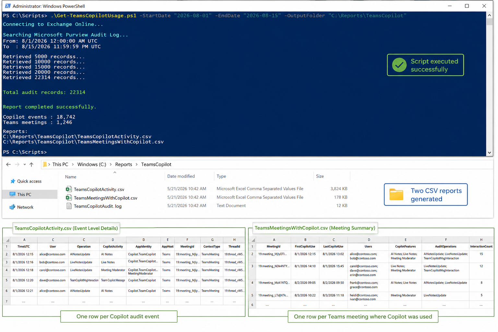

Teams Meetings With Copilot Usage
Summary
This script provides a solution for identifying Microsoft Teams meetings where Copilot or Facilitator capabilities were used by analyzing Microsoft Purview Unified Audit Logs. It searches for the Copilot-related audit events AINotesUpdate, LiveNotesUpdate, and TeamCopilotMsgInteraction, parses the audit data, and correlates the activity with Teams meeting identifiers and users.
The script follows these steps:
- Connects to Exchange Online and Microsoft Purview audit logging
- Defines the date range for the audit log search
- Searches Unified Audit Logs for
AINotesUpdate,LiveNotesUpdate, andTeamCopilotMsgInteraction - Handles audit log pagination to retrieve larger result sets
- Parses AuditData from each Copilot-related event
- Identifies Copilot activity such as AI Notes, Live Notes, Meeting Moderator, and Team Copilot messages
- Extracts Teams meeting information including Meeting ID, Thread ID, user, timestamp, and application context
- Correlates multiple Copilot events belonging to the same Teams meeting
- Generates a detailed activity report containing individual Copilot interactions
- Generates a consolidated meeting report showing unique Teams meetings where Copilot was used, including users, Copilot features used, first and last usage time, and interaction count
- Exports the results to CSV files for further analysis and reporting

Output Files
The script generates two CSV files for analyzing Microsoft Teams Copilot usage.
1. TeamsCopilotActivity.csv
This file provides a detailed event-level report of Copilot activity captured from the Microsoft Purview Unified Audit Log. Each row represents an individual Copilot-related audit event.
The report includes information such as:
| Parameter | Description |
|---|---|
| TimeUTC | Date and time when the Copilot activity occurred, recorded in UTC. |
| User | User associated with the Copilot audit event. |
| Operation | Audit operation captured, such as AINotesUpdate, LiveNotesUpdate, or TeamCopilotMsgInteraction. |
| CopilotActivity | User-friendly description of the Copilot capability used, such as AI Notes, Live Notes, Meeting Moderator, or Team Copilot Message. |
| AppIdentity | Identifies the specific Copilot application or capability responsible for the event. |
| AppHost | Microsoft 365 application where the Copilot activity occurred, typically Teams. |
| MeetingId | Identifier used to associate the Copilot activity with a Teams meeting. |
| ContextType | Type of Copilot context associated with the event, such as TeamsMeeting. |
| ThreadId | Teams conversation or meeting thread identifier associated with the activity. |
| RecordType | Microsoft Purview audit record type for the event. |
| AuditRecordId | Unique identifier of the Microsoft Purview audit record. |
| ClientIP | Client IP address recorded for the audit activity, when available. |
| ClientRegion | Geographic/client region associated with the audit event, when available. |
This file is useful for detailed investigation, auditing, and understanding individual Copilot interactions within Teams meetings.
2. TeamsMeetingsWithCopilot.csv
This file provides a consolidated meeting-level report. Multiple Copilot audit events associated with the same Meeting ID are grouped into a single record.
The report includes:
| Parameter | Description |
|---|---|
| MeetingId | Unique identifier of the Teams meeting where Copilot activity was detected. |
| FirstCopilotUse | Timestamp of the first Copilot-related activity detected for the meeting. |
| LastCopilotUse | Timestamp of the last Copilot-related activity detected for the meeting. |
| Users | List of unique users associated with Copilot activities in the meeting. |
| CopilotFeatures | Copilot capabilities detected during the meeting, such as AI Notes, Live Notes, Meeting Moderator, or Team Copilot Message. |
| AuditOperations | Unique audit operations detected for the meeting, such as AINotesUpdate, LiveNotesUpdate, and TeamCopilotMsgInteraction. |
| InteractionCount | Total number of Copilot-related audit events detected for the meeting. |
This file is useful for reporting and adoption analysis, as it provides a quick view of which Teams meetings used Copilot and how Copilot was used during those meetings.
Permissions
The account running the script must have sufficient permissions to search the Microsoft Purview Unified Audit Log and retrieve Copilot-related audit events.
The following permissions and roles are required:
- Microsoft Purview Audit permissions – The user must be assigned the Audit Reader or Audit Manager role in Microsoft Purview to search and retrieve audit records.
- Exchange Online access – The script uses the ExchangeOnlineManagement PowerShell module and
Search-UnifiedAuditLogcmdlet. The signed-in account must be authorized to run audit log searches. - Audit logging enabled – Microsoft Purview auditing must be enabled for the tenant so that Teams and Copilot activities are recorded.
- Copilot/Teams audit data access – The account must have permission to retrieve the relevant audit operations, including
AINotesUpdate,LiveNotesUpdate, andTeamCopilotMsgInteraction.
For least-privilege access, assigning the user to the Audit Reader role group is generally sufficient when the requirement is only to retrieve and analyze audit events without modifying audit configuration.
Implementation
- Open Windows PowerShell ISE
- Create a new file
- Copy the code below
- Save the file and run it
<#
.SYNOPSIS
Reports on Microsoft Teams meetings where Copilot or Facilitator was used.
.DESCRIPTION
Searches the Microsoft 365 Unified Audit Log for Copilot-related Teams events
(AI Notes, Live Notes, Meeting Moderator, and Team Copilot messages) and produces
two CSV reports: a detailed per-event report and a summary per-meeting report.
.PARAMETER StartDate
Start of the audit log search window. Defaults to 30 days ago.
.PARAMETER EndDate
End of the audit log search window. Defaults to now.
.PARAMETER OutputFolder
Folder to write the CSV reports to. Defaults to the current directory.
.NOTES
Requires the ExchangeOnlineManagement module and Exchange Online audit log permissions.
.EXAMPLE
.\Get-TeamsMeetingsWithCopilot.ps1 -StartDate (Get-Date).AddDays(-7) -OutputFolder "C:\Reports"
#>
[CmdletBinding()]
param (
[datetime]$StartDate = (Get-Date).AddDays(-30),
[datetime]$EndDate = (Get-Date),
[string]$OutputFolder = "."
)
Import-Module ExchangeOnlineManagement
Connect-ExchangeOnline
# Unified Audit Log timestamps are stored in UTC.
$StartDateUtc = $StartDate.ToUniversalTime()
$EndDateUtc = $EndDate.ToUniversalTime()
if ($StartDateUtc -gt $EndDateUtc) { throw "StartDate must be earlier than or equal to EndDate." }
Write-Host "Searching audit log from $StartDateUtc to $EndDateUtc (UTC)..." -ForegroundColor Cyan
$Operations = @(
"AINotesUpdate",
"LiveNotesUpdate",
"TeamCopilotMsgInteraction"
)
# Search-UnifiedAuditLog paginates results; ReturnLargeSet supports up to 50,000 records per session.
$SessionId = "TeamsCopilot-$([guid]::NewGuid())"
$AuditRecords = @()
do {
$Results = Search-UnifiedAuditLog -StartDate $StartDateUtc -EndDate $EndDateUtc `
-Operations $Operations -SessionId $SessionId -SessionCommand ReturnLargeSet -ResultSize 5000
if ($Results) {
$AuditRecords += $Results
Write-Host "Retrieved $($AuditRecords.Count) audit records..." -ForegroundColor Yellow
}
}
while ($Results.Count -gt 0)
Write-Host "Total audit records found: $($AuditRecords.Count)" -ForegroundColor Green
$DetailedResults = foreach ($Record in $AuditRecords) {
try {
$AuditData = $Record.AuditData | ConvertFrom-Json
$CopilotEventData = $AuditData.CopilotEventData
$AppHost = $null
$ThreadId = $null
$Contexts = $null
if ($CopilotEventData) {
$AppHost = $CopilotEventData.AppHost
$ThreadId = $CopilotEventData.ThreadId
$Contexts = $CopilotEventData.Contexts
}
# Expected values: Copilot.TeamCopilot.AINotes, LiveNotes, MeetingModerator, Message
$AppIdentity = $null
if ($AuditData.AppIdentity) {
$AppIdentity = $AuditData.AppIdentity
}
elseif ($CopilotEventData.AppIdentity) {
$AppIdentity = $CopilotEventData.AppIdentity
}
$MeetingContext = $Contexts | Where-Object { $_.Type -eq "TeamsMeeting" } | Select-Object -First 1
$MeetingId = $null
$ContextType = $null
if ($MeetingContext) {
$MeetingId = $MeetingContext.Id
$ContextType = $MeetingContext.Type
}
# Fall back to alternate properties if no Teams meeting context was found.
if (-not $MeetingId) {
if ($AuditData.MeetingId) {
$MeetingId = $AuditData.MeetingId
}
elseif ($AuditData.ThreadId) {
$MeetingId = $AuditData.ThreadId
}
elseif ($ThreadId) {
$MeetingId = $ThreadId
}
}
$CopilotActivity = switch ($AuditData.Operation) {
"AINotesUpdate" { "AI Notes" }
"LiveNotesUpdate" {
if ($AppIdentity -match "MeetingModerator") { "Meeting Moderator" } else { "Live Notes" }
}
"TeamCopilotMsgInteraction" { "Team Copilot Message" }
default { $AuditData.Operation }
}
[PSCustomObject]@{
TimeUTC = $AuditData.CreationTime
User = $AuditData.UserId
Operation = $AuditData.Operation
CopilotActivity = $CopilotActivity
AppIdentity = $AppIdentity
AppHost = $AppHost
MeetingId = $MeetingId
ContextType = $ContextType
ThreadId = $ThreadId
RecordType = $AuditData.RecordType
AuditRecordId = $AuditData.Id
ClientIP = $AuditData.ClientIP
ClientRegion = $AuditData.ClientRegion
}
}
catch {
Write-Warning "Unable to parse audit record $($Record.Identity)"
}
}
$DetailedFile = Join-Path $OutputFolder "TeamsCopilotActivity.csv"
$DetailedResults | Sort-Object TimeUTC | Export-Csv -Path $DetailedFile -NoTypeInformation -Encoding UTF8
$MeetingResults = $DetailedResults | Where-Object { $_.MeetingId } | Group-Object MeetingId | ForEach-Object {
$MeetingEvents = $_.Group | Sort-Object TimeUTC
$Users = ($MeetingEvents.User | Where-Object { $_ } | Sort-Object -Unique) -join "; "
$Activities = ($MeetingEvents.CopilotActivity | Where-Object { $_ } | Sort-Object -Unique) -join "; "
$OperationsUsed = ($MeetingEvents.Operation | Sort-Object -Unique) -join "; "
[PSCustomObject]@{
MeetingId = $_.Name
FirstCopilotUse = $MeetingEvents[0].TimeUTC
LastCopilotUse = $MeetingEvents[-1].TimeUTC
Users = $Users
CopilotFeatures = $Activities
AuditOperations = $OperationsUsed
InteractionCount = $MeetingEvents.Count
}
}
$MeetingFile = Join-Path $OutputFolder "TeamsMeetingsWithCopilot.csv"
$MeetingResults | Sort-Object FirstCopilotUse | Export-Csv -Path $MeetingFile -NoTypeInformation -Encoding UTF8
Write-Host ""
Write-Host "============================================" -ForegroundColor Cyan
Write-Host "Copilot audit events : $($DetailedResults.Count)"
Write-Host "Meetings found : $($MeetingResults.Count)"
Write-Host ""
Write-Host "Detailed report: $DetailedFile" -ForegroundColor Green
Write-Host "Meeting report : $MeetingFile" -ForegroundColor Green
Write-Host "============================================" -ForegroundColor Cyan
Disconnect-ExchangeOnline -Confirm:$false
Check out the PowerShell to learn more at: PowerShell Documentation | Microsoft Learn
Contributors
| Author(s) |
|---|
| Nanddeep Nachan |
| Smita Nachan |
References
Disclaimer
THESE SAMPLES ARE PROVIDED AS IS WITHOUT WARRANTY OF ANY KIND, EITHER EXPRESS OR IMPLIED, INCLUDING ANY IMPLIED WARRANTIES OF FITNESS FOR A PARTICULAR PURPOSE, MERCHANTABILITY, OR NON-INFRINGEMENT.